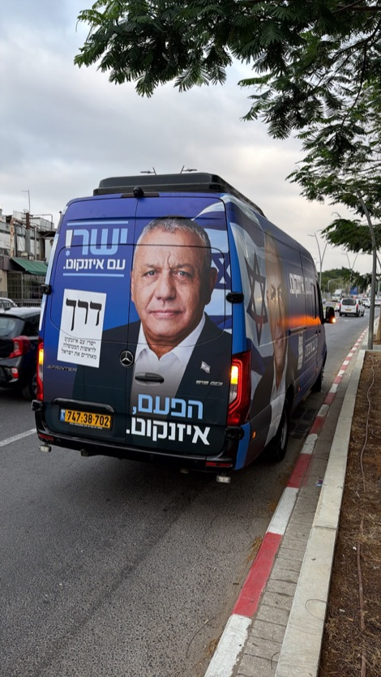
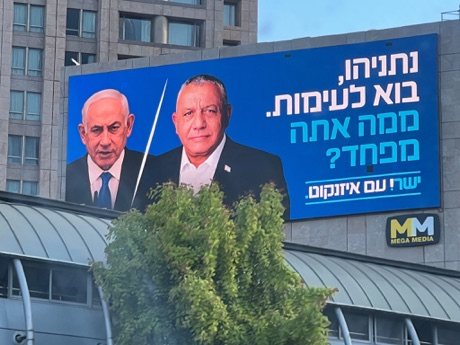
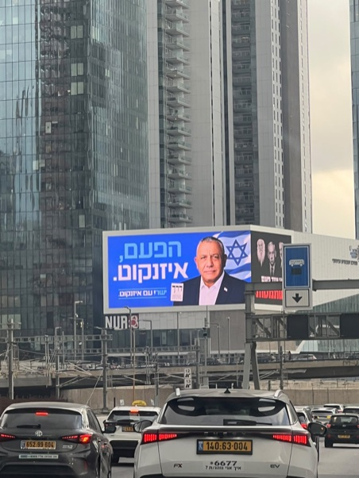
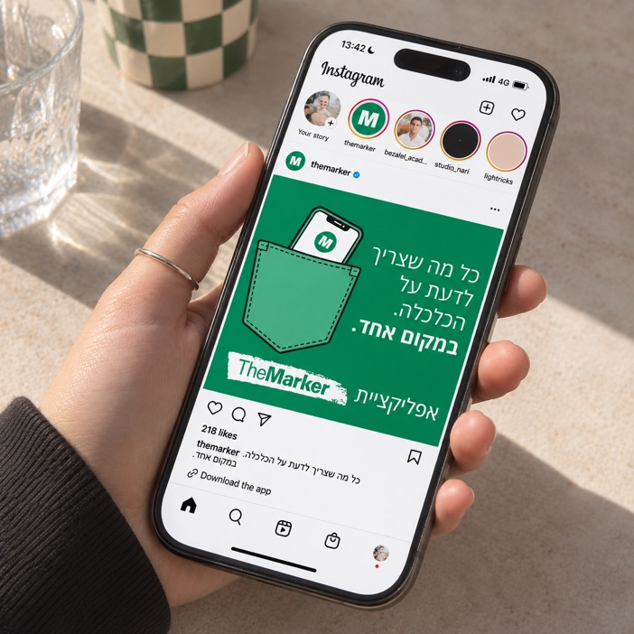
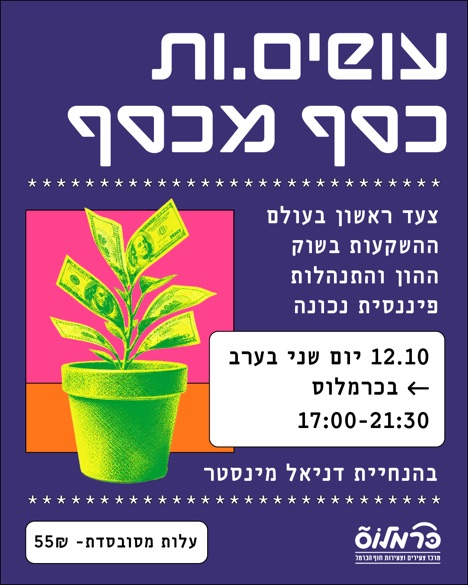
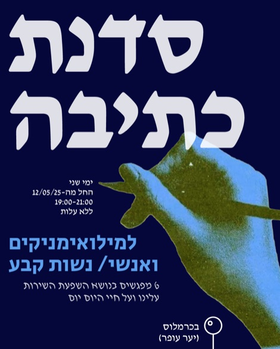

About & Approach
I’m a graphic designer with a particular interest in visual identities, typography, and art direction. I enjoy research and concept development, as well as the challenge of building complex visual systems. I’m especially interested in working across languages, exploring their cultural contexts, and bringing them together within a shared visual system.
Before moving into graphic design, I studied and practiced theatre directing. My background in the performing arts brings a different perspective to my design practice, shaping the way I approach storytelling, composition, space, and the relationships between different elements. While art direction feels like a natural continuation of that experience, this perspective influences my work across all areas of design.
Recent Work
Gadi Eisenkot Campaign
The Marker
Carmelos
Campaign designer
Re-Levant studio
2026
Digital marketing &
motion designer
Freelance
2026
Digital designer
Freelance
2026







Education
BA Candidate in Visual Communication
Bezalel Academy of Arts and Design
Tools
InDesign · Claude Code · Photoshop · Lightroom · After Effects · Weavy · Illustrator
View CV
Let's talk.